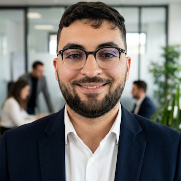

01
Software Engineering
Ingénierie logicielle
Robust web applications and maintainable backend systems.
Applications web robustes et systèmes backend maintenables.
SymfonyPHP.NET / C#JavaScriptSQL
Software × Quality × Intelligence
I engineer reliable digital products and intelligent systems that perform in the real world.
Je conçois des produits numériques fiables et des systèmes intelligents qui excellent dans le monde réel.
Software Engineer, QA Automation Specialist and PhD researcher exploring AI-powered image modeling.
Ingénieur logiciel, spécialiste en automatisation QA et doctorant explorant la modélisation d’images par l’IA.

Core mindset
État d’esprit
Build. Test. Improve.
01 / Profile
I combine software engineering discipline, quality-first thinking and applied AI research to turn complex challenges into useful, maintainable solutions.
J’associe la rigueur de l’ingénierie logicielle, une culture qualité et la recherche appliquée en IA pour transformer des défis complexes en solutions utiles et maintenables.
Years building
Années d’expérience
Fields connected
Domaines connectés
PhD in progress
Doctorat en cours
02 / Expertise
01
Robust web applications and maintainable backend systems.
Applications web robustes et systèmes backend maintenables.
02
Scalable test strategies engineered for confidence and speed.
Stratégies de test évolutives conçues pour la confiance et la vitesse.
03
Deep learning applied to image modeling and scientific discovery.
Deep learning appliqué à la modélisation d’images et à la découverte scientifique.
03 / Journey
2023 — Now
DIOT-SIACI Group
Building high-performance Symfony applications, designing end-to-end automated test suites and integrating quality gates into GitLab CI pipelines.
Développement d’applications Symfony performantes, conception de suites de tests automatisés et intégration de contrôles qualité aux pipelines GitLab CI.
2023
JESA Group
Designed a web platform for data management and project resource estimation, simplifying cross-functional workflows.
Conception d’une plateforme web de gestion des données et d’estimation des ressources, simplifiant les flux de travail transverses.
04 / Research
Laboratory of Applied Mathematics of the Oriental, Oujda. Researching AI applications for image modeling and management.
Laboratoire des Mathématiques Appliquées de l’Oriental, Oujda. Recherche sur les applications de l’IA à la modélisation d’images et à la gestion.
Research focus
Automated DNA Damage Quantification using Deep Learning and Comet Assay.
Computer Science & Management Sciences — School of Higher Engineering Studies, Oujda.
Informatique & Sciences de Gestion — École des Hautes Études d’Ingénierie, Oujda.
Arab Journal of Chemical and Environmental Research, 12(2), 167–178.
Scientific poster · Morocco
Have a challenge in mind?
Un défi en tête ?